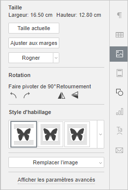
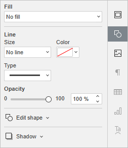
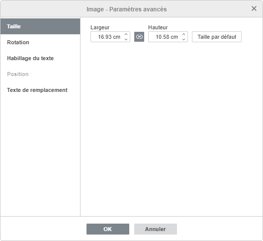
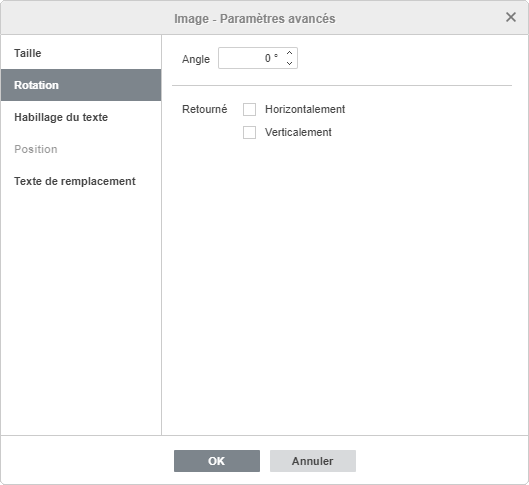
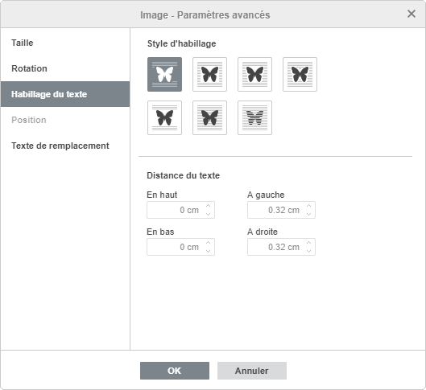
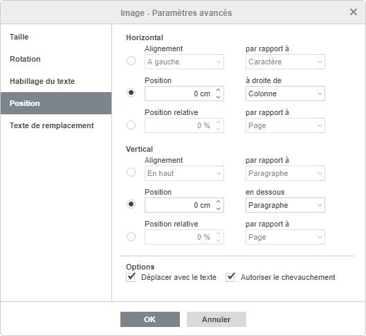
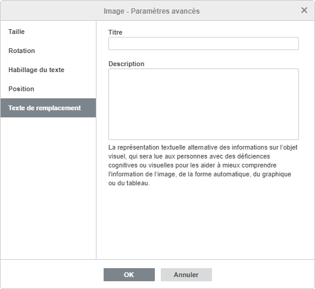

Insérer des images
L'éditeur de documents vous permet d'insérer des images aux formats populaires dans votre document. Les formats d'image pris en charge sont les suivants: BMP, GIF, JPEG, JPG, PNG.
Insérer une image
Pour insérer une image dans votre document de texte,
- Placez le curseur à l'endroit où vous voulez insérer l'image.
- Passez à l'onglet Insertion de la barre d'outils supérieure.
- Cliquez surl'icône Image de la barre d'outils supérieure.
- Sélectionnez l'une des options suivantes pour télécharger l'image:
- l'option Image à partir d'un fichier ouvre la fenêtre de dialogue standard pour sélectionner un fichier. Recherchez le fichier nécessaire sur votre ordinateur et cliquez sur le bouton0 Ouvrir.
Dans l'éditeur en ligne, vous pouvez sélectionnez plusieurs images à la fois.
- l'option Image à partir d'une URL ouvre la fenêtre dans laquelle il faut saisir l'adresse Web de l'image, ensuite cliquez sur le bouton OK.
- l'option Image de stockage ouvrira la fenêtre Sélectionner la source de données. Sélectionnez une image stockée sur votre portail et cliquez sur le bouton OK.
- l'option Image à partir d'un fichier ouvre la fenêtre de dialogue standard pour sélectionner un fichier. Recherchez le fichier nécessaire sur votre ordinateur et cliquez sur le bouton0 Ouvrir.
- Une fois ajoutée, vous pouvez modifier sa taille, ses paramètres et sa position.
Il est également possible d'ajouter une légende à l'image. Pour en savoir plus sur utilisation des légendes, veuillez consulter cet article.
Pour transformer une image en lien cliquable:
- sélectionnez l'image et utilisez la combinaison des touches Ctrl+K ou
- sélectionnez l'image, passez à l'onglet Insertion ou Références et cliquez sur le bouton Lien ou
- sélectionnez l'image, cliquez sur l'image avec le bouton droit de la souris et et choisissez Lien dans le menu.
Pour en savoir plus sur les liens, veuillez consulter cet article.
Déplacer et redimensionner des images
Pour modifier la taille de l'image, faites glisser les petits carreaux situés sur ses bords. Pour garder les proportions de l'image sélectionnée lors du redimensionnement, maintenez la touche Maj enfoncée et faites glisser l'une des icônes de coin.
Pour modifier la position de l'image, utilisez l'icône qui apparaît lorsque vous placez le curseur de votre souris sur l'image. Faites glisser l'image vers la position choisie sans relâcher le bouton de la souris.
Lorsque vous déplacez l'image, des lignes de guidage s'affichent pour vous aider à la positionner sur la page avec précision (si un style d'habillage autre que aligné sur le texte est sélectionné).
Pour faire pivoter une image, déplacer le curseur vers la poignée de rotation et faites la glisser dans le sens horaire ou antihoraire. Pour faire pivoter par incréments de 15 degrés, maintenez enfoncée la touche Maj tout en faisant pivoter.
La liste des raccourcis clavier qui peuvent être utilisés lorsque vous travaillez avec des objets est disponible ici.
Ajuster les paramètres de l'image

Certains paramètres de l'image peuvent être modifiés en utilisant l'onglet Paramètres de l'image de la barre latérale droite. Pour l'activer, cliquez sur l'image et sélectionnez l'icône Paramètres de l'image à droite. Vous pouvez y modifier les paramètres suivants:
- Taille est utilisée pour afficher la Largeur et la Hauteur de l'image actuel. Le bouton Ajuster aux marges permet de redimensionner l'image et de l'ajuster dans les marges gauche et droite. Le cas échéant, vous pouvez rétablir la taille de l'image source en cliquant sur le bouton Taille actuelle. Le bouton Ajuster aux marges permet de redimensionner l'image qu'elle corresponde à la zone entre la marge droite et la marge gauche de la page.
Le bouton Rogner permet de rogner l'image. Cliquez sur le bouton Rogner pour activer les poignées de rognage qui appairaient par chaque coin et sur les côtés. Faites glisser manuellement les poignées pour définir la zone de rognage. Vous pouvez placer le curseur sur la bordure de la zone de rognage lorsque il se transforme en icône et faites glisser la zone.
- Pour rogner un seul côté, faites glisser la poignée située au milieu de ce côté.
- Pour rogner simultanément deux côtés adjacents, faites glisser l'une des poignées d'angle.
- Pour rogner également deux côtés opposés de l'image, maintenez la touche Ctrl enfoncée lorsque vous faites glisser la poignée au milieu de l'un de ces côtés.
- Pour rogner également tous les côtés de l'image, maintenez la touche Ctrl enfoncée lorsque vous faites glisser l'une des poignées d'angle.
Lorsque la zone de rognage est définie, cliquez sur le bouton Rogner encore une fois, ou appuyez sur la touche Échap ou cliquez n'importe où à l'extérieur de la zone de rognage pour valider les modifications.
Une fois la zone de rognage sélectionnée, il est également possible d'utiliser les options Rogner à la forme, Remplir et Ajuster disponibles dans le menu déroulant Rogner. Cliquez de nouveau sur le bouton Rogner et sélectionnez l'option de votre choix:
- Lorsque vous sélectionnez l'option Rogner à la forme, l'image va s'ajuster à une certaine forme. Vous pouvez sélectionner la forme appropriée dans la galerie qui s'affiche lorsque vous placez le pointeur de la souris sur l'option Rogner à la forme. Vous pouvez toujours utiliser les options Remplir et Ajuster pour choisir le façon d'ajuster votre image à la forme.
- Si vous sélectionnez l'option Remplir, la partie centrale de l'image originale sera conservée et utilisée pour remplir la zone de cadrage sélectionnée, tandis que les autres parties de l'image seront supprimées.
- Si vous sélectionnez l'option Ajuster, l'image sera redimensionnée pour correspondre à la hauteur ou à la largeur de la zone de rognage. Aucune partie de l'image originale ne sera supprimée, mais des espaces vides peuvent apparaître dans la zone de rognage sélectionnée.
Pour réinitialiser la dimension en pixels d'une image, cliquez sur Réinitialiser le rognage.
- Opacité sert à régler le niveau d'opacité des formes automatiques en faisant glisser le curseur ou en saisissant la valeur de pourcentage à la main. La valeur par défaut est 100%. Elle correspond à l'opacité complète. La valeur 0% correspond à la transparence totale.
- Rotation permet de faire pivoter l'image de 90 degrés dans le sens des aiguilles d'une montre ou dans le sens inverse des aiguilles d'une montre, ainsi que de retourner l'image horizontalement ou verticalement. Cliquez sur l'un des boutons:
- pour faire pivoter l'image de 90 degrés dans le sens inverse des aiguilles d'une montre.
- pour faire pivoter l'image de 90 degrés dans le sens des aiguilles d'une montre.
- pour retourner l'image horizontalement (de gauche à droite).
- pour retourner l'image verticalement (à l'envers).
- Style d'habillage sert à sélectionner l'un des styles d'habillage, ç-à-d aligné sur le texte, carré, rapproché, au travers, haut et bas, devant le texte, derrière le texte (pour en savoir plus, consultez la section paramètres avancés ci-dessous).
- Remplacer l'image sert à remplacer l'image actuelle et charger une autre À partir d'un fichier, À partir de l'espace de stockage ou À partir d'une URL.
Certains paramètres de l'image peuvent être également modifiés en utilisant le menu contextuel. Les options du menu sont les suivantes:
- Couper, Copier, Coller - les options nécessaires pour couper ou coller le texte / l'objet sélectionné et coller un passage de texte précédemment coupé / copié ou un objet à la position actuelle du curseur.
- Organiser sert à placer le graphique sélectionné au premier plan, envoyer à l'arrière-plan, avancer ou reculer ainsi que grouper ou dégrouper des graphiques pour effectuer des opérations avec plusieurs à la fois. . Pour en savoir plus sur l'organisation des objets, vous pouvez vous référer à cette page.
- Aligner sert à aligner l'image à gauche, au centre, à droite, en haut, au milieu ou en bas. Pour en savoir plus sur l'alignement des objets, veuillez consulter cette page.
- Style d'habillage sert à sélectionner l'un des styles d'habillage disponibles - aligné sur le texte, carré, rapproché, au travers, haut et bas, devant le texte, derrière le texte, ou modifier les limites du renvoi à la ligne. L'option Modifier les limites du renvoi à la ligne n'est disponible que si le style d'habillage défini n'est pas En ligne. Faites glisser les points d'habillage pour personnaliser les limites. Pour créer un nouveau point d'habillage, cliquez sur la ligne rouge et faites-la glisser vers la position désirée.
- Rotation permet de faire pivoter l'image de 90 degrés dans le sens des aiguilles d'une montre ou dans le sens inverse des aiguilles d'une montre, ainsi que de retourner l'image horizontalement ou verticalement.
- Enregistrer en tant qu'image sert à sauvegarder l'image en tant qu'image sur votre ordinateur.
- Rogner sert à sélectionner l'une des options de rognage: Rogner, Remplir , ou Ajuster. Sélectionnez l'option Rogner dans le sous-menu, ensuite faites glisser les poignées de rognage pour définir la zone de rognage, puis cliquez à nouveau sur l'une de ces trois options dans le sous-menu pour appliquer les modifications.
- Taille actuelle sert à changer la taille actuelle de l'image et rétablir la taille d'origine.
- Remplacer l'image sert à remplacer l'image actuelle et charger une autre À partir d'un fichier, À partir de l'espace de stockage ou À partir d'une URL.
- Paramètres avancés de l'image sert à ouvrir la fenêtre Image - Paramètres avancés.

Une fois l'image est sélectionnée, l'icône Paramètres de la forme deviendra aussi disponible à droite. Vous pouvez cliquer sur cette icône pour ouvrir l'onglet Paramètres de la forme dans la barre latérale droite et ajuster le type, la taille, la couleur et l'opacité de la line ainsi que le type de la forme en sélectionnant une autre forme dans le menu Modifier la forme automatique. La forme de l'image changera en conséquence.
Sous l'onglet Paramètres de la forme, vous pouvez utiliser l'option Ajouter une ombre pour créer une zone ombrée autour de l'image.
Ajuster les paramètres de l'image
Pour modifier les paramètres avancés, cliquez sur l'image avec le bouton droit de la souris et sélectionnez Paramètres avancés de l'image du menu contextuel ou cliquez sur le lien de la barre latérale droite Afficher les paramètres avancés. La fenêtre paramètres de l'image s'ouvre:

L'onglet Taille comporte les paramètres suivants:
- Largeur et Hauteur - utilisez ces options pour changer la largeur et/ou la hauteur. Lorsque le bouton Proportions constantesest activé (dans ce cas, il ressemble à ceci),la largeur et la hauteur seront changées en même temps, le ratio d'aspect du graphique original sera préservé. Pour rétablir la taille par défaut de l'image ajoutée, cliquez sur le bouton Taille actuelle.

L'onglet Rotation comporte les paramètres suivants:
- Angle - utilisez cette option pour faire pivoter l'image d'un angle exactement spécifié. Entrez la valeur souhaitée mesurée en degrés dans le champ ou réglez-la à l'aide des flèches situées à droite.
- Retourné - cochez la case Horizontalement pour retourner l'image horizontalement (de gauche à droite) ou la case Verticalement pour retourner l'image verticalement (à l'envers).

L'onglet Habillage du texte contient les paramètres suivants:
- Style d'habillage - utilisez cette option pour changer la manière dont l'image est positionnée par rapport au texte : elle peut faire partie du texte (si vous sélectionnez le style aligné sur le texte) ou être contournée par le texte de tous les côtés (si vous sélectionnez l'un des autres styles).
-
Aligné sur le texte - l'image fait partie du texte, comme un caractère, ainsi si le texte est déplacé, le graphique est déplacé lui aussi. Dans ce cas-là les options de position ne sont pas accessibles.
Si vous sélectionnez l'un des styles suivants, vous pouvez déplacer l'image indépendamment du texte et définir sa position exacte :
- Carré - le texte est ajusté autour des bords du graphique.
- Rapproché - le texte est ajusté sur le contour du graphique.
- Au travers - le texte est ajusté autour des bords du graphique et occupe l'espace vide à l'intérieur de celui-ci. Pour créer l'effet, utilisez l'option Modifier les limites du renvoi à la ligne du menu contextuel.
- Haut et bas - le texte est ajusté en haut et en bas du graphique.
- Devant le texte - l'image s'affiche sur le texte.
- Derrière le texte - le texte s'affiche sur l'image.
-
Aligné sur le texte - l'image fait partie du texte, comme un caractère, ainsi si le texte est déplacé, le graphique est déplacé lui aussi. Dans ce cas-là les options de position ne sont pas accessibles.
Si vous avez choisi le style carré, rapproché, au travers, haut et bas, vous avez la possibilité de configurer des paramètres supplémentaires, ç-à-d Distance du texte de tous les côtés (haut, bas, gauche, droit).

L'onglet Position n'est disponible que si vous choisissez le style d'habillage autre que En ligne. Cet onglet contient les paramètres suivants qui varient selon le type d'habillage sélectionné:
- La section Horizontal vous permet de sélectionner l'un des trois types de positionnement d'image suivants:
- Alignement (gauche, centre, droite) par rapport au caractère, à la colonne, à la marge de gauche, à la marge, à la page ou à la marge de droite,
- Position absolue mesurée en unités absolues, c.-à-d. Centimètres/Points/Pouces (selon l'option spécifiée dans l'onglet Fichier → Paramètres avancés...) à droite du caractère, de la colonne, de la marge de gauche, de la marge, de la page ou de la marge de droite.
- Position relative mesurée en pourcentage par rapport à la marge gauche, à la marge, à la page ou à la marge de droite.
- La section Vertical vous permet de sélectionner l'un des trois types de positionnement d'image suivants:
- Alignement (haut, centre, bas) par rapport à la ligne, à la marge, à la marge inférieure, au paragraphe, à la page ou à la marge supérieure,
- Position absolue mesurée en unités absolues, c.-à-d. Centimètres/Points/Pouces (selon l'option spécifiée dans l'onglet Fichier → Paramètres avancés...) au-dessous de la ligne, de la marge, de la marge inférieure, du paragraphe, de la page ou la marge supérieure,
- Position relative mesurée en pourcentage par rapport à la marge, à la marge inférieure, à la page ou à la marge supérieure.
- Déplacer avec le texte détermine si l'image se déplace en même temps que le texte sur lequel il est aligné.
- Chevauchement détermine si deux images sont fusionnées en une seule ou se chevauchent si vous les faites glisser les unes près des autres sur la page.

L'onglet Texte de remplacement permet de spécifier un Titre et une Description qui sera lue aux personnes avec des déficiences cognitives ou visuelles.